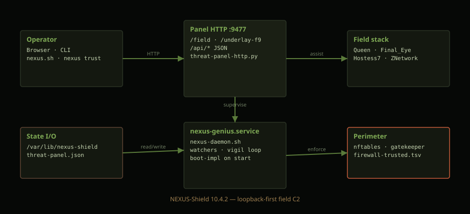
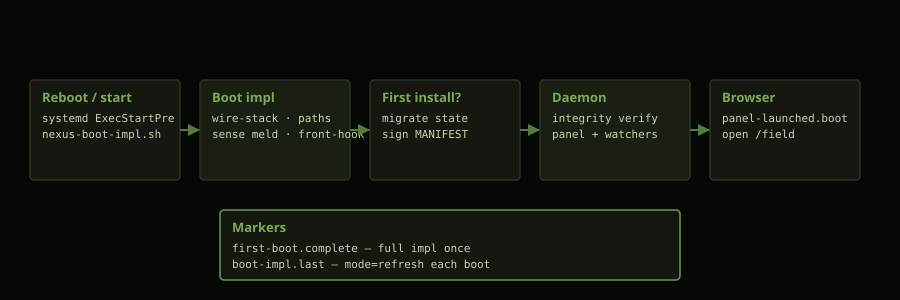
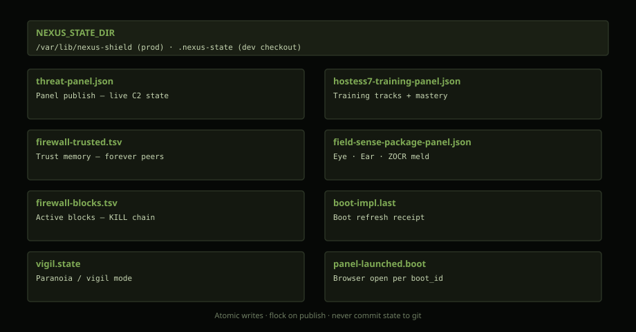
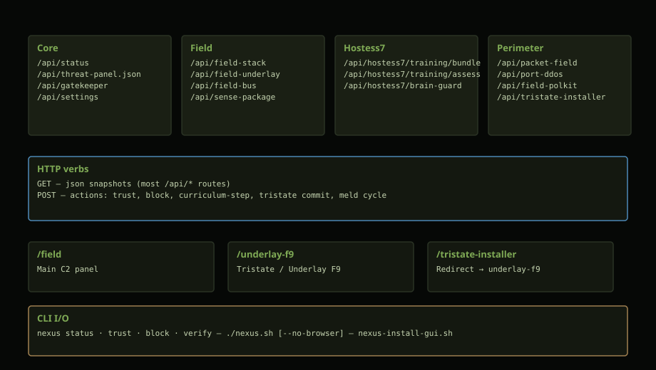
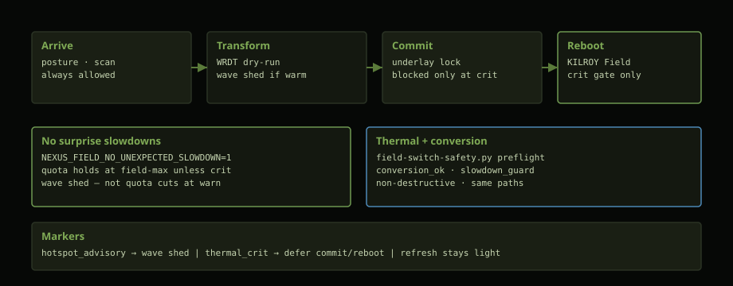

NEXUS-Shield I/O is loopback-first: the panel speaks JSON over HTTP on :9477, the daemon writes structured state under NEXUS_STATE_DIR, and the CLI mirrors the same trust/block verbs.

Every reboot reloads field tech before the normal daemon loop. First install runs a heavier path (wire-stack, migrate, manifest sign).

| Script | When | Role |
|---|---|---|
scripts/nexus-boot-impl.sh | systemd ExecStartPre | Standalone boot entry |
lib/nexus-boot-impl.sh | daemon + nexus.sh | first vs refresh impl |
first-boot.complete | state marker | Set after first full impl |
boot-impl.last | state marker | mode=first|refresh each boot |
panel-launched.boot | state marker | Browser opened this boot_id |
Production state lives in /var/lib/nexus-shield. Dev checkouts use .nexus-state/. Never commit runtime state.

# Read live panel snapshot
curl -s http://127.0.0.1:9477/api/threat-panel.json | jq .
# Trust a peer (CLI)
nexus trust 203.0.113.10
# Verify signed manifest
nexus verifyBase: http://127.0.0.1:9477. Most routes return JSON. Handler: lib/threat-panel-http.py.

| Route | Method | Output |
|---|---|---|
/api/status | GET | Daemon + version posture |
/api/threat-panel.json | GET | Full panel state blob |
/api/gatekeeper | GET | Connection scoring, USER_OK / HARM |
/api/settings | GET/POST | Toggles → settings.override |
/api/field-stack | GET | Queen + Final_Eye + meld posture |
/api/field-underlay | GET | Underlay F9 doctrine JSON |
/api/tristate-installer | GET/POST | 2026 Tristate wizard API |
/api/hostess7/training/bundle | GET | Training tab data |
/api/hostess7/training/curriculum-step | POST | One curriculum step |
| Path | File |
|---|---|
/field | panel/threat-panel.html |
/underlay-f9 | panel/underlay-f9.html |
/tristate-installer | Redirect → underlay-f9 underlay sector |
| Command | I/O |
|---|---|
./nexus.sh | Start panel, open browser, tray |
./nexus.sh --no-browser | Panel only, print URL |
nexus-install-gui.sh | Open Underlay F9 installer in browser |
nexus status | Health stdout |
nexus trust <ip> | Append firewall-trusted.tsv |
nexus block <ip> | Append firewall-blocks.tsv |
Painless Tristate conversion — wave shed on advisory heat, quota holds at field-max unless thermal crit. No GRUB edits, no surprise slowdowns.

pythong lib/field-switch-safety.py evaluate --phase=commit
./scripts/nexus-release-finalize.sh| Variable | Default | Role |
|---|---|---|
NEXUS_INSTALL_ROOT | source tree or /usr/local/lib/nexus-shield | Install tree |
NEXUS_STATE_DIR | /var/lib/nexus-shield | Runtime state |
NEXUS_THREAT_PANEL_PORT | 9477 | Panel HTTP |
NEXUS_PANEL_AUTO_OPEN | 1 | Browser on boot |
SG_ROOT | NewLatest root | Stack path resolution |